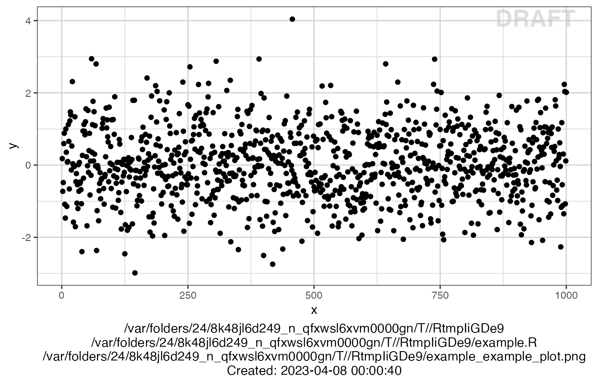
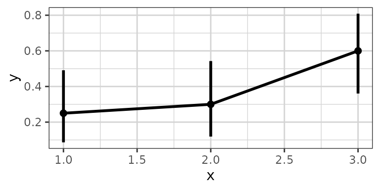
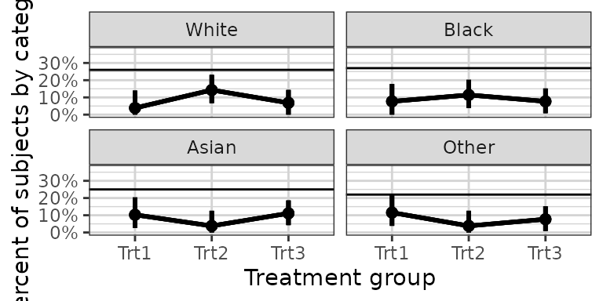
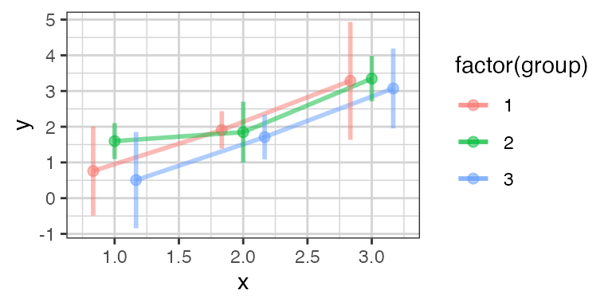
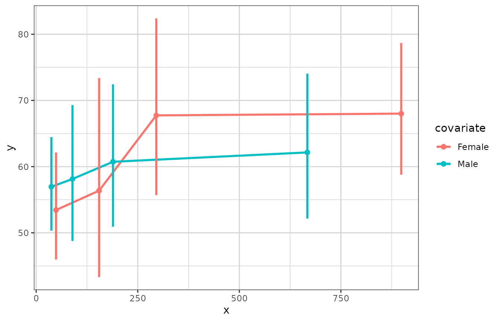
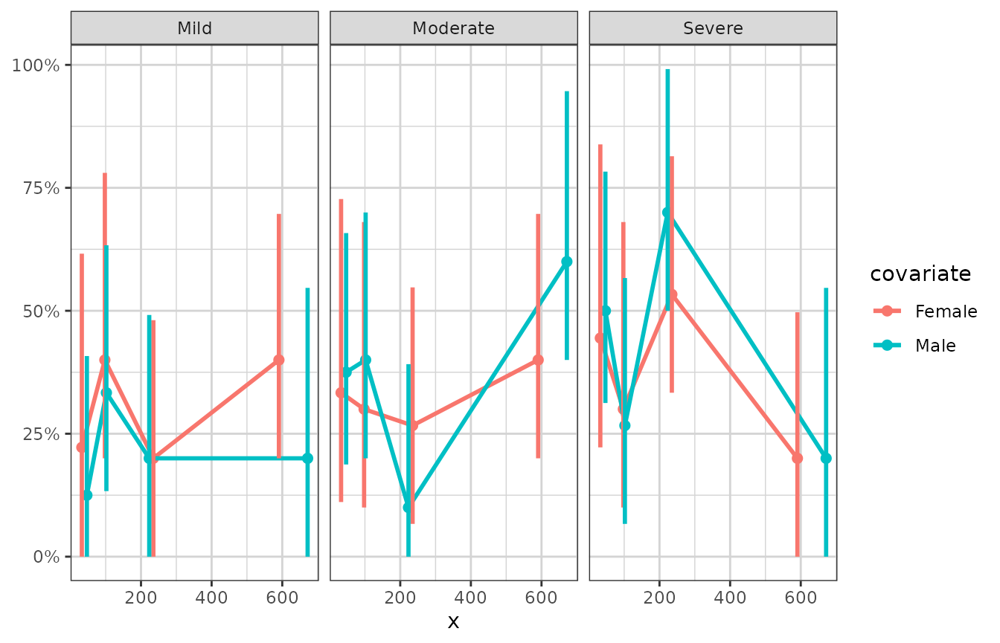
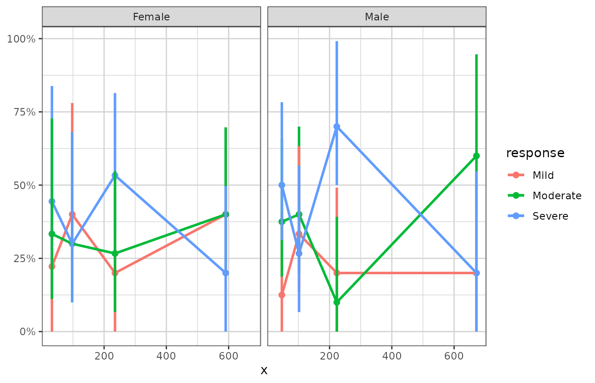
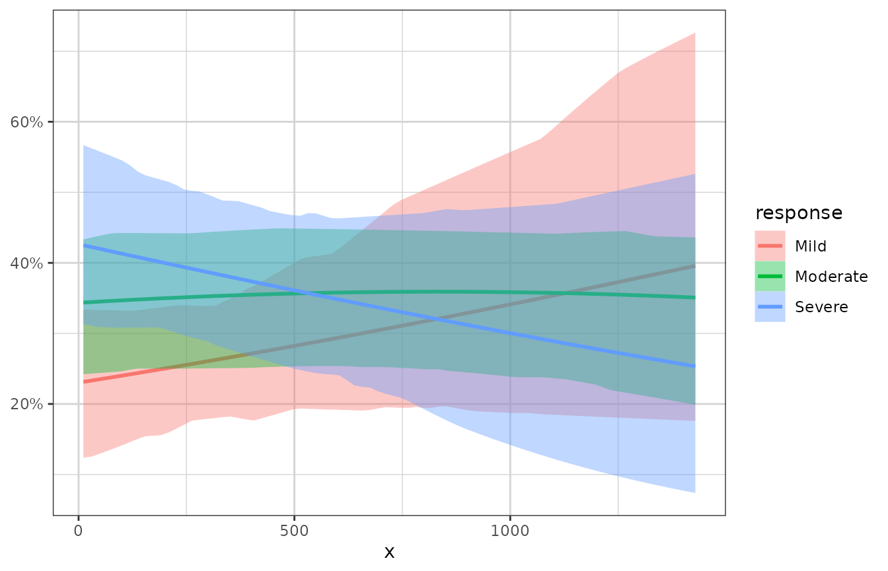
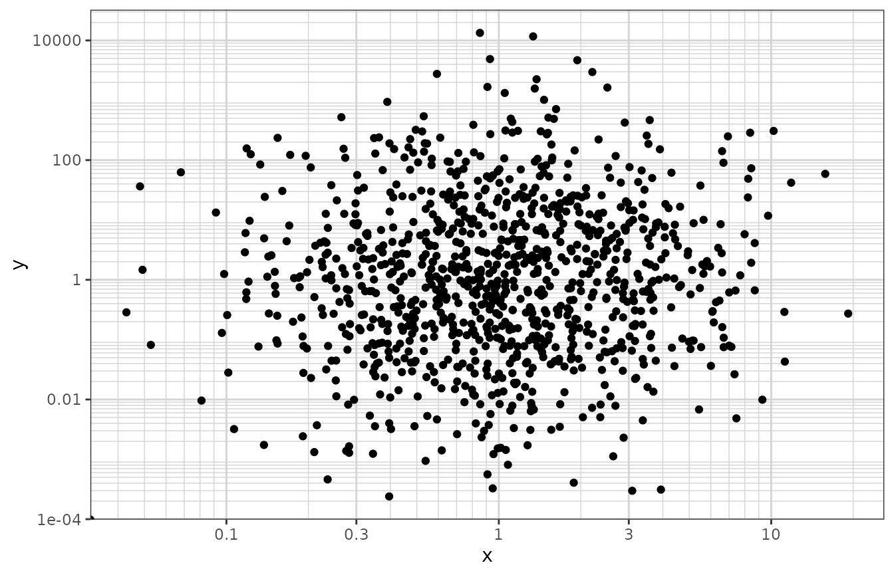

xgxr Overview
Andrew Stein, Fariba Khanshan, Alison Margolskee
2021-02-01
xgxr_overview.RmdOverview
The xgxr package supports a structured approach to exploring PKPD data (outlined here). It also contains helper functions for enabling the modeler to follow best R practices (by appending the program name, figure name location, and draft status to each plot) and enabling the modeler to follow best graphical practices (by providing an xgx theme that reduces chart ink, and by providing time-scale, log-scale, and reverse-log-transform-scale functions for more readable axes).
Traceability: annotating and saving plots and tables
Saving figures
Our best practices require that we mark plots as “DRAFT” if not yet final, and also list the program that created the plot and the location where the plot is stored. This helps with the traceability of the work, by ensuring that the following information is available for every plot in a report: the R script used to create the figure, the location where the figure is stored, and the time and date when the figure was created. The key functions here are: * xgx_annotate_status allows for the addition of text (like the word draft) to the plots * xgx_annotate_filenames allows for printing the filenames as a caption for the plot. It requires an input list dirs with particular fields, as shown below.
The function xgx_save calls both of the above functions and it is illustrated below.
This function also requires the user to input a width and height for the graph. This is because often, the plots that are created have font that is so small that it’s impossible to read the x and y axes. We’ve found that the easiest way to set the font size is “indirectly” by specifying the height and width of the graph. Note that if you have a plot window open, you can get the height and width by typing dev.size()
dirs <- list(
parent_dir = tempdir(),
rscript_dir = tempdir(),
rscript_name = "example.R",
results_dir = tempdir(),
filename_prefix = "example_")
data <- data.frame(x = 1:1000, y = stats::rnorm(1000))
g <- xgx_plot(data = data, aes(x = x, y = y)) +
geom_point()
xgx_save(width = 4, height = 4, dirs = dirs, filename_main = "example_plot", status = "DRAFT")
The the function xgx_save works only with ggplot objects. If the figure that is created is not a ggplot object, it will not work. An alternative is to use xgx_annotate_status_png to add the status and filename to png files.
data <- data.frame(x = 1:1000, y = stats::rnorm(1000))
g <- xgx_plot(data = data, aes(x = x, y = y)) +
geom_point()
filename = file.path(tempdir(), "png_example.png")
ggsave(filename, plot = g, height = 4, width = 4, dpi = 75)
xgx_annotate_status_png(filename, "./ExampleScript.R")
#> Add footnote to /var/folders/24/8k48jl6d249_n_qfxwsl6xvm0000gn/T//Rtmp99TfWT/png_example.pngSaving tables
We also provide a function xgx_save_table for annotating the relevant information to csv files. The annotated table is shown below.
x <- data.frame(ID = c(1, 2), SEX = c("male", "female"))
data <- xgx_save_table(x, dirs = dirs, filename_main = "ExampleTable")
knitr::kable(data)| ID | SEX |
|---|---|
| 1 | male |
| 2 | female |
| /var/folders/24/8k48jl6d249_n_qfxwsl6xvm0000gn/T//Rtmp99TfWT | |
| /var/folders/24/8k48jl6d249_n_qfxwsl6xvm0000gn/T//Rtmp99TfWT/example.R | |
| /var/folders/24/8k48jl6d249_n_qfxwsl6xvm0000gn/T//Rtmp99TfWT/example_unnamed_table_.csv | |
| Created: /2021-02-01 19:16:05 |
Graphics helpers
xgx theme
The xgx_theme() function includes the xGx recommended plot settings. It sets the background to white with light grey lines for the major and minor breaks. This minimizes chart ink as recommended by Edward Tufte. You can add xgx_theme() to an existing ggplot object, or you can call xgx_plot() in place of ggplot() for all of your plot initiations.
xgx_plot(mtcars, aes(x = cyl, y = mpg)) + geom_point()You may wish to set the theme to xgx_theme for your R session, as we do below.
theme_set(xgx_theme())
## Alternative, equivalent function:
xgx_theme_set()
# time <- rep(seq(1,10),5)
# id <- sort(rep(seq(1,5), 10))
# conc <- exp(-time)*sort(rep(rlnorm(5),10))
#
# data <- data.frame(time = time, concentration = conc, id = factor(id))
# xgx_plot() + xgx_geom_spaghetti(data = data, mapping = aes(x = time, y = concentration, group = id, color = id))
#
# xgx_spaghetti(data = data, mapping = aes(x = time, y = concentration, group = id, color = id))Confidence intervals
The code for confidence intervals is a bit complex and hard to remember. Rather than copy-pasting this code we provide the function xgx_stat_ci for calculating and plotting default confidence intervals and also xgx_geom_ci for percentile intervals. xgx_stat_ci allows the definition of multiple geom options in one function call, defined through a list. The default is geom = list("point","line","errorbar"). Additional ggplot options can be fed through the ggplot object call, or the xgx_stat_ci layer. (Note that xgx_stat_ci and xgx_geom_ci are equivalent). xgx_stat_pi and xgx_geom_pi work in a similar fashion but for percentile intervals.
data <- data.frame(x = rep(c(1, 2, 3), each = 20),
y = rep(c(1, 2, 3), each = 20) + stats::rnorm(60),
group = rep(1:3, 20))
xgx_plot(data,aes(x = x, y = y)) +
xgx_stat_ci(conf_level = .95)
xgx_plot(data,aes(x = x, y = y)) +
xgx_stat_pi(percent = .95)
xgx_plot(data,aes(x = x, y = y)) +
xgx_stat_ci(conf_level = .95, geom = list("pointrange","line"))
xgx_plot(data,aes(x = x, y = y)) +
xgx_stat_ci(conf_level = .95, geom = list("ribbon","line"))
xgx_plot(data,aes(x = x, y = y, group = group, color = factor(group))) +
xgx_stat_ci(conf_level = .95, alpha = 0.5,
position = position_dodge(width = 0.5))
The default settings calculate the confidence interval based on the Student t Distribution (assuming normally distributed data). You can also specify “lognormal”“,”binomial"" or “multinomial”" for the distribution. The first will perform the confidence interval operation on the log-scaled data, the second uses the binomial exact confidence interval calculation from the binom package, and the third uses MultinomCI from the DescTools package.
Note: you DO NOT need to use both distribution = "lognormal" and scale_y_log10(), choose only one of these.
# plotting lognormally distributed data
data <- data.frame(x = rep(c(1, 2, 3), each = 20),
y = 10^(rep(c(1, 2, 3), each = 20) + stats::rnorm(60)),
group = rep(1:3, 20))
xgx_plot(data, aes(x = x, y = y)) +
xgx_stat_ci(conf_level = 0.95, distribution = "lognormal")
# note: you DO NOT need to use both distribution = "lognormal" and scale_y_log10()
xgx_plot(data,aes(x = x, y = y)) +
xgx_stat_ci(conf_level = 0.95) + xgx_scale_y_log10()
# plotting binomial data
data <- data.frame(x = rep(c(1, 2, 3), each = 20),
y = rbinom(60, 1, rep(c(0.2, 0.6, 0.8), each = 20)),
group = rep(1:3, 20))
xgx_plot(data, aes(x = x, y = y)) +
xgx_stat_ci(conf_level = 0.95, distribution = "binomial")
# Example plotting the percent of subjects in a categorical covariate group by treatment.
set.seed(12345)
data = data.frame(x = 120*exp(rnorm(100,0,1)),
response = sample(c("Trt1", "Trt2", "Trt3"), 100, replace = TRUE),
covariate = factor(sample(c("White","Black","Asian","Other"), 100, replace = TRUE),
levels = c("White", "Black", "Asian", "Other")))
xgx_plot(data = data) +
xgx_stat_ci(mapping = aes(x = response, response = covariate),
distribution = "ordinal") +
xgx_stat_ci(mapping = aes(x = 1, response = covariate), geom = "hline",
distribution = "ordinal") +
scale_y_continuous(labels = scales::percent_format()) +
facet_wrap(~covariate) +
xlab("Treatment group") + ylab("Percent of subjects by category")
#> In xgx_stat_ci:
#> The following aesthetics are identical to response: PANEL
#> These will be used for differentiating response groups in the resulting plot.
#> In xgx_stat_ci:
#> The following aesthetics are identical to response: PANEL
#> These will be used for differentiating response groups in the resulting plot.
#> In xgx_stat_ci:
#> The following aesthetics are identical to response: PANEL
#> These will be used for differentiating response groups in the resulting plot.
#> In xgx_stat_ci:
#> The following aesthetics are identical to response: PANEL
#> These will be used for differentiating response groups in the resulting plot.
#> Warning: Unknown or uninitialised column: `flipped_aes`.
#> Warning: Unknown or uninitialised column: `flipped_aes`.
#> Warning: Unknown or uninitialised column: `width`.
#> geom_path: Each group consists of only one observation. Do you need to adjust
#> the group aesthetic?
#> geom_path: Each group consists of only one observation. Do you need to adjust
#> the group aesthetic?
#> geom_path: Each group consists of only one observation. Do you need to adjust
#> the group aesthetic?
#> geom_path: Each group consists of only one observation. Do you need to adjust
#> the group aesthetic?xgx_stat_ci can now also cut data by quantiles of x using the bins option, e.g. bins = 4 will cut the data by quartiles of x. You can also supply your own breaks to cut the data.
# plotting
set.seed(12345)
data = data.frame(x = 120*exp(rnorm(100,0,1)),
response = sample(c("Mild","Moderate","Severe"), 100, replace = TRUE),
covariate = sample(c("Male","Female"), 100, replace = TRUE)) %>%
mutate(y = (50 + 20*x/(200 + x))*exp(rnorm(100, 0, 0.3)))
# plotting a lognormally distributed variable by quartiles of x
xgx_plot(data = data) +
xgx_stat_ci(mapping = aes(x = x, y = y, colour = covariate),
distribution = "lognormal", bins = 4)
# plotting ordinal or multinomial data, by quartiles of x
xgx_plot(data = data) +
xgx_stat_ci(mapping = aes(x = x, response = response, colour = covariate),
distribution = "ordinal", bins = 4) +
scale_y_continuous(labels = scales::percent_format()) + facet_wrap(~response)
#> In xgx_stat_ci:
#> The following aesthetics are identical to response: PANEL
#> These will be used for differentiating response groups in the resulting plot.
#> In xgx_stat_ci:
#> The following aesthetics are different from response: colour
#> These will be used to divide the data into different groups before calculating summary statistics on the response.
#> In xgx_stat_ci:
#> The following aesthetics are identical to response: PANEL
#> These will be used for differentiating response groups in the resulting plot.
#> In xgx_stat_ci:
#> The following aesthetics are different from response: colour
#> These will be used to divide the data into different groups before calculating summary statistics on the response.
#> In xgx_stat_ci:
#> The following aesthetics are identical to response: PANEL
#> These will be used for differentiating response groups in the resulting plot.
#> In xgx_stat_ci:
#> The following aesthetics are different from response: colour
#> These will be used to divide the data into different groups before calculating summary statistics on the response.
#> Warning: Unknown or uninitialised column: `flipped_aes`.
#> Warning: Unknown or uninitialised column: `flipped_aes`.
#> Warning: Unknown or uninitialised column: `width`.
xgx_plot(data = data) +
xgx_stat_ci(mapping = aes(x = x, response = response, colour = response),
distribution = "ordinal", bins = 4) +
scale_y_continuous(labels = scales::percent_format()) + facet_wrap(~covariate)
#> In xgx_stat_ci:
#> The following aesthetics are identical to response: colour
#> These will be used for differentiating response groups in the resulting plot.
#> In xgx_stat_ci:
#> The following aesthetics are different from response: PANEL
#> These will be used to divide the data into different groups before calculating summary statistics on the response.
#> In xgx_stat_ci:
#> The following aesthetics are identical to response: colour
#> These will be used for differentiating response groups in the resulting plot.
#> In xgx_stat_ci:
#> The following aesthetics are different from response: PANEL
#> These will be used to divide the data into different groups before calculating summary statistics on the response.
#> In xgx_stat_ci:
#> The following aesthetics are identical to response: colour
#> These will be used for differentiating response groups in the resulting plot.
#> In xgx_stat_ci:
#> The following aesthetics are different from response: PANEL
#> These will be used to divide the data into different groups before calculating summary statistics on the response.
#> Warning: Unknown or uninitialised column: `flipped_aes`.
#> Warning: Unknown or uninitialised column: `flipped_aes`.
#> Warning: Unknown or uninitialised column: `width`.Nonlinear smoothing (e.g. Emax)
The current ggplot2::geom_smooth does not allow for plotting confidence bands for method = “nls”, as ggplot2 does not supply a predictdf for an object of class nls, which geom_smooth silently calls to calculate the ymin and ymax for the confidence bands. The xgxr package includes a definition of predictdf.nls, allowing for confidence bands for method = “nls”. xgxr also includes an Emax smooth function called xgx_geom_smooth_emax which utilizes the “nlsLM” method, and silently calls the predictdf.nls defined by xgxr.
set.seed(123456)
Nsubj <- 10
Doses <- c(0, 25, 50, 100, 200)
Ntot <- Nsubj*length(Doses)
times <- c(0,14,30,60,90)
dat1 <- data.frame(ID = 1:(Ntot),
DOSE = rep(Doses, Nsubj),
E0 = 50*rlnorm(Ntot, 0, 0.3),
Emax = 100*rlnorm(Ntot, 0, 0.3),
ED50 = 50*rlnorm(Ntot, 0, 0.3)) %>%
dplyr::mutate(Response = (E0 + Emax*DOSE/(DOSE + ED50))*rlnorm(Ntot, 0, 0.3) ) %>%
merge(data.frame(ID = rep(1:(Ntot), each = length(times)), Time = times), by = "ID")
gg <- ggplot(data = dat1, aes(x = DOSE, y = Response))
gg <- gg + geom_point()
gg
gg + geom_smooth(method = "nlsLM",
formula = y ~ E0 + Emax*x/(ED50 + x),
method.args = list(start = list(E0 = 1, ED50 = 1, Emax = 1),
lower = c(-Inf, 0, -Inf)))
#> Warning: Computation failed in `stat_smooth()`:
#> $ operator is invalid for atomic vectors
gg + xgx_geom_smooth_emax()
#> Warning in xgx_geom_smooth_emax(): Formula not specified.
#> Using default formula y ~ E0 + Emax*x/(ED50 + x),
#> initializing E0, Emax, and ED50 to 1,
#> and setting lower bound on ED50 to 0
#> Warning in xgx_geom_smooth_emax(): Computation failed in `stat_smooth()`:
#> $ operator is invalid for atomic vectors
gg +
xgx_geom_smooth_emax(geom = "ribbon", color = "black", fill = NA, linetype = "dashed") +
xgx_geom_smooth_emax(geom = "line", color = "red")
#> Warning in xgx_geom_smooth_emax(geom = "ribbon", color = "black", fill = NA, : Formula not specified.
#> Using default formula y ~ E0 + Emax*x/(ED50 + x),
#> initializing E0, Emax, and ED50 to 1,
#> and setting lower bound on ED50 to 0
#> Warning in xgx_geom_smooth_emax(geom = "line", color = "red"): Formula not specified.
#> Using default formula y ~ E0 + Emax*x/(ED50 + x),
#> initializing E0, Emax, and ED50 to 1,
#> and setting lower bound on ED50 to 0
#> Warning: Computation failed in `stat_smooth()`:
#> $ operator is invalid for atomic vectors
#> Warning: Computation failed in `stat_smooth()`:
#> $ operator is invalid for atomic vectors
Nice log scale
This version of the log scale function shows the tick marks between the major breaks (i.e. at 1, 2, 3, … 10, instead of just 1 and 10). It also uses \[10^x\] notation when the labels are base 10 and are very small or very large (<.001 or >9999)
df <- data.frame(x = c(0, stats::rlnorm(1000, 0, 1)),
y = c(0, stats::rlnorm(1000, 0, 3)))
xgx_plot(data = df, aes(x = x, y = y)) +
geom_point() +
xgx_scale_x_log10() +
xgx_scale_y_log10()
#> Warning: Transformation introduced infinite values in continuous x-axis
#> Warning: Transformation introduced infinite values in continuous y-axisReverse log transform
This transform is useful for plotting data on a percentage scale that can approach 100% (such as receptor occupancy data).
conc <- 10^(seq(-3, 3, by = 0.1))
ec50 <- 1
data <- data.frame(concentration = conc,
bound_receptor = 1 * conc / (conc + ec50))
gy <- xgx_plot(data, aes(x = concentration, y = bound_receptor)) +
geom_point() +
geom_line() +
xgx_scale_x_log10() +
xgx_scale_y_reverselog10()
gx <- xgx_plot(data, aes(x = bound_receptor, y = concentration)) +
geom_point() +
geom_line() +
xgx_scale_y_log10() +
xgx_scale_x_reverselog10()
gridExtra::grid.arrange(gy, gx, nrow = 1)
Nice scale for percent change data
This transform is useful for plotting percent change from baseline data. Percent change data can range from -100% to +Inf%, and depending on the range of the data, a linear scale can lose the desired resolution. This transform plots percent change data on a scale of log10(PCHG + 100%), similar to a log scale of ratio to baseline.
Nsubj <- 10
Doses <- c(0, 25, 50, 100, 200)
Ntot <- Nsubj*length(Doses)
times <- c(0,14,30,60,90)
dat1 <- data.frame(ID = 1:(Ntot),
DOSE = rep(Doses, Nsubj),
PD0 = rlnorm(Ntot, log(100), 1),
Kout = exp(rnorm(Ntot,-2, 0.3)),
Imax = 1,
ED50 = 25) %>%
dplyr::mutate(PDSS = PD0*(1 - Imax*DOSE/(DOSE + ED50))*exp(rnorm(Ntot, 0.05, 0.3)) ) %>%
merge(data.frame(ID = rep(1:(Ntot), each = length(times)), Time = times), by = "ID") %>%
dplyr::mutate(PD = ((PD0 - PDSS)*(exp(-Kout*Time)) + PDSS),
PCHG = (PD - PD0)/PD0)
ggplot2::ggplot(dat1 %>% subset(Time == 90),
ggplot2::aes(x = DOSE, y = PCHG, group = DOSE)) +
ggplot2::geom_boxplot() +
xgx_theme() +
xgx_scale_y_percentchangelog10() +
ylab("Percent Change from Baseline") +
xlab("Dose (mg)")
ggplot2::ggplot(dat1,
ggplot2::aes(x = Time, y = PCHG, group = ID, color = factor(DOSE))) +
ggplot2::geom_line() +
xgx_theme() +
xgx_scale_y_percentchangelog10() +
guides(color = guide_legend(title = "Dose (mg)")) +
ylab("Percent Change from Baseline")
dat2 <- data.frame(ID = 1:(Ntot),
DOSE = rep(Doses, Nsubj),
PD0 = rlnorm(Ntot, log(100), 1),
Kout = exp(rnorm(Ntot,-2, 0.3)),
Emax = 50*rlnorm(Ntot, 0, 0.3),
ED50 = 300) %>%
dplyr::mutate(PDSS = PD0*(1 + Emax*DOSE/(DOSE + ED50))*exp(rnorm(Ntot, -1, 0.3)) ) %>%
merge(data.frame(ID = rep(1:(Ntot), each = length(times)), Time = times), by = "ID") %>%
dplyr::mutate(PD = ((PD0 - PDSS)*(exp(-Kout*Time)) + PDSS),
PCHG = (PD - PD0)/PD0)
ggplot2::ggplot(dat2, ggplot2::aes(x = DOSE, y = PCHG, group = DOSE)) +
ggplot2::geom_boxplot() +
xgx_theme() +
xgx_scale_y_percentchangelog10() +
ylab("Percent Change from Baseline") +
xlab("Dose (mg)")
ggplot2::ggplot(dat2,
ggplot2::aes(x = Time, y = PCHG, group = ID, color = factor(DOSE))) +
ggplot2::geom_line() +
xgx_theme() +
xgx_scale_y_percentchangelog10() +
guides(color = guide_legend(title = "Dose (mg)")) +
ylab("Percent Change from Baseline")
Scaling x-axis as a time scale
For time, it’s often good for the x ticks to be spaced in a particular way. For instance, for hours, subdividing in increments by 24, 12, 6, and 3 hours can make more sense than by 10 or 100. Similarly for days, increments of 7 or 28 days are preferred over 5 or 10 days. xgx_scale_x_time_units allows for this, where it is the input and output units.
data <- data.frame(x = 1:1000, y = stats::rnorm(1000))
g <- xgx_plot(data = data, aes(x = x, y = y)) +
geom_point()
g1 <- g + xgx_scale_x_time_units(units_dataset = "hours", units_plot = "hours")
g2 <- g + xgx_scale_x_time_units(units_dataset = "hours", units_plot = "days")
g3 <- g + xgx_scale_x_time_units(units_dataset = "hours", units_plot = "weeks")
g4 <- g + xgx_scale_x_time_units(units_dataset = "hours", units_plot = "months")
gridExtra::grid.arrange(g1, g2, g3, g4, nrow = 2)
Data checking
Numerical check
We’ve found that during exploration, it can be extremely important to check the dataset for issues. This can be done using the xgx_check_data or xgx_summarize_data function (the two functions are identical).
data <- mad_missing_duplicates %>%
filter(CMT %in% c(1, 2, 3)) %>%
rename(DV = LIDV,
YTYPE = CMT,
USUBJID = ID)
covariates <- c("WEIGHTB", "SEX")
check <- xgx_check_data(data, covariates)
#> Warning in xgx_check_data(data, covariates): Setting ID column equal to USUBJID
#>
#> DATA SUMMARY
#> CONTINUOUS COVARIATES
#> CATEGORICAL COVARIATES
#> POSSIBLE DATA ISSUES - FIRST 6 RECORDS
#> The following columns contained missing values
#> DV:368
knitr::kable(check$summary)| Category | Description | YTYPE | Statistic | Value |
|---|---|---|---|---|
| Patients | Number of Patients | - | 60 | 60 |
| MDV | Number of patients with zero PK or PD observations | all | 0 | 0 |
| MDV | Number of Missing Data Points (MDV==1 and EVID==0) | 1 | 0 | 0 |
| MDV | Number of Missing Data Points (MDV==1 and EVID==0) | 2 | 99 | 99 |
| MDV | Number of Missing Data Points (MDV==1 and EVID==0) | 3 | 0 | 0 |
| Dose | Number of non-zero doses | - | 300 | 300 |
| Dose | Number of zero doses (AMT==0) | - | 60 | 60 |
| Dose | Number of patients that never received drug | - | 10 | 10 |
| DV | Number of Data Points | 1 | 360 | 360 |
| DV | Number of Data Points | 2 | 1309 | 1309 |
| DV | Number of Data Points | 3 | 600 | 600 |
| DV | Number of Data Points per Individual | 1 | min = 6, median = 6, max = 6 | 6 |
| DV | Number of Data Points per Individual | 2 | min = 26, median = 26, max = 27 | 26 |
| DV | Number of Data Points per Individual | 3 | min = 10, median = 10, max = 10 | 10 |
| DV | Number of Data Points with zero value (DV==0) | 1 | 0 | 0 |
| DV | Number of Data Points with zero value (DV==0) | 2 | 0 | 0 |
| DV | Number of Data Points with zero value (DV==0) | 3 | 0 | 0 |
| DV | Number of Data Points with NA (is.na(DV)) | 1 | 0 | 0 |
| DV | Number of Data Points with NA (is.na(DV)) | 2 | 8 | 8 |
| DV | Number of Data Points with NA (is.na(DV)) | 3 | 0 | 0 |
| DV+TIME | Multiple measurements at same time | 1 | 0 | 0 |
| DV+TIME | Multiple measurements at same time | 2 | 32 | 32 |
| DV+TIME | Multiple measurements at same time | 3 | 0 | 0 |
| CENS | Number of Censored Data Points | 1 | 0 (0%) | 0 |
| CENS | Number of Censored Data Points | 2 | 9 (1%) | 9 |
| CENS | Number of Censored Data Points | 3 | 4 (1%) | 4 |
| All Columns | Negative Values (number) | - | DV:12 | 12 |
| All Columns | Missing Values (number) | - | DV:368 | 368 |
| Data_Check_Issue | ID | TIME | DV | CENS | YTYPE |
|---|---|---|---|---|---|
| is.na(DV) | 15 | 0.000 | NA | 0 | 2 |
| is.na(DV) | 21 | 127.858 | NA | 0 | 2 |
| is.na(DV) | 22 | 216.537 | NA | 0 | 2 |
| is.na(DV) | 40 | 156.563 | NA | 0 | 2 |
| is.na(DV) | 47 | 120.300 | NA | 0 | 2 |
| is.na(DV) | 50 | 71.814 | NA | 0 | 2 |
You can also get an overview of the covariates in the dataset with xgx_summarize_covariates. The covariate summaries are also provided in the xgx_check_data and xgx_summarize_data functions.
covar <- xgx_summarize_covariates(data,covariates)
knitr::kable(covar$cts_covariates)| Covariate | Nmissing | min | 25th | median | 75th | max |
|---|---|---|---|---|---|---|
| WEIGHTB | 0 | 52.8 | 69.2 | 78.9 | 89.85 | 109 |
knitr::kable(covar$cat_covariates)| Covariate | Nmissing | Ndistinct | Value (Count) |
|---|---|---|---|
| SEX | 0 | 2 | Female (30), Male (30) |